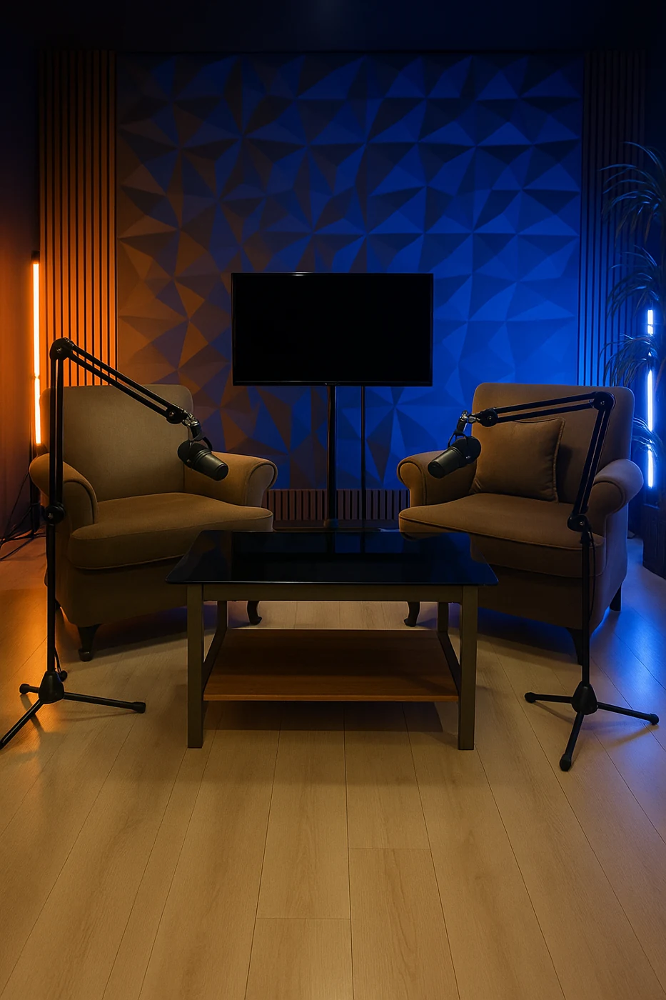

01
گفتگوی منتشرشده
رهبران زیبایی | دکتر زهرا استیلاف
گفتگو درباره مسیر حرفهای در زیبایی و پیوند زیبایی با شعر و ادبیات
مشاهده در یوتیوب ↗رسانه مستقل پزشکی زیبایی
رهبران زیبایی رسانهای مستقل در حوزه پزشکی زیبایی است که میکوشد در گفتوگو با پزشکان و متخصصان، به علم، مسئولیت حرفهای و داستانهای انسانی پشت عمل بالینی بپردازد.

مجموعه گفتگوها
گفتگوی منتشرشده
گفتگو درباره مسیر حرفهای در زیبایی و پیوند زیبایی با شعر و ادبیات
مشاهده در یوتیوب ↗گفتگوی منتشرشده
گفتگویی در حوزه پزشکی زیبایی
مشاهده در یوتیوب ↗رسالت ما
احترام به شواهد، عدم قطعیت و یادگیری مستمر.
انتخاب آگاهانه، اختیار و احترام به هر فرد.
قضاوت مستقل پزشک و گفتوگوی مسئولانه با جامعه.
بنیانگذار و مجری
مهندس پزشکی، کارآفرین و بنیانگذار رسانه با بیش از ۱۵ سال تجربه در صنعت پزشکی زیبایی. رهبران زیبایی از دل همین تجربه بلندمدت در فناوری پزشکی، توسعه بازار، آموزش حرفهای و گفتوگوی عمومی شکل گرفته است.
 بنیانگذار و مجری
بنیانگذار و مجری